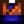

Essig
Zur Navigation springen
Zur Suche springen
| Essig | |||||
| Eine gereifte und fermentierte Flüssigkeit, die in vielen Rezepten Anwendung findet. | |||||
| Information | |||||
| Quelle | Pierres für |
||||
| Energie / Gesundheit |
|
||||
| Verkaufspreis | |||||
Essig ist eine Kochzutat, die in einer Reihe von Rezepten Verwendung findet. Er kann für  200 G bei Pierres Gemischtwarenladen gekauft werden. Es kann auch in Georges Laden während des Wüstenfestivals für
200 G bei Pierres Gemischtwarenladen gekauft werden. Es kann auch in Georges Laden während des Wüstenfestivals für  5 Calico Eier verkauft werden.
5 Calico Eier verkauft werden.
Essig kann durchs platzieren von 2 Reis im Fass hergestellt werden.
Auf einem Baum angewendet, verhindert es das Wachstum von Moos.
Rezepte
| Bild | Name | Beschreibung | Zutaten | Energie / Gesundheit | Rezeptquelle | Verkaufspreis | |||
|---|---|---|---|---|---|---|---|---|---|
| Kohlsalat | Leicht, frisch und sehr gesund. |
|
|||||||
| Pastinakensuppe | Sie ist herzhaft und frisch. |
|
|||||||
| Radieschensalat | Die Radieschen sind so knackig! |
|
|||||||
| Salat | Ein gesunder Gartensalat. |
|
Als Geschenk
| Reaktionen der Dorfbewohner
| |
|---|---|
| Gefällt nicht | |
Schneiderei
Kann in der Spule der Nähmaschine genutzt werden, um die färbbare Orangene Kampfsportuniform herzustellen. 
Geschichte
- 1.4: Kann jetzt für die Schneiderei verwendet werden.
- 1.6: Wird jetzt von George im Wüstenfestival verkauft. Herstellung mit Reis im Fass hinzugefügt.
- 1.6.4: Kann jetzt am Baum anwendet werden damit kein Moos wächst.
| Zutaten | |
|---|---|
| Zutaten | Weizenmehl • Zucker • Reis • Öl • Essig |